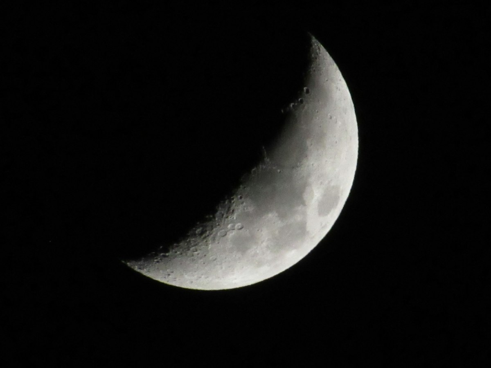

Clipper Picks Up Speed From Earth and Pays for Instruments
The pass is where a launch vehicle limit turns into instrument mass. Timing data, not photographs, will decide whether it worked.

A gerund doing the work
Phys.org filed the item on Nov 25, 2026, and one gerund carries the story: Europa Clipper is zooming by Earth, headed for Jupiter's icy moon. Zooming is the wrong verb. A flyby is a controlled fall past a planet, aimed long before it happens. It is checked afterward in the timing residuals, the gap between the seconds predicted and the seconds received. It is the least visible event on the manifest and the most disciplined one.
The claim here is narrow. Clipper's pass by its own planet is the cheapest large maneuver on the manifest, bought with Earth's motion rather than with propellant. That purchase makes room in the mass budget for instruments meant to read the ice from orbit, and wire copy treats the encounter as scenery. The flyby is an accounting entry. The bill gets presented at Jupiter.
What a gravity assist transfers
Orbital mechanics is conservative in the bookkeeping sense. A rocket adds energy by spending mass. A planet adds energy by spending momentum, and the supply on offer is absurdly large relative to a spacecraft. The vehicle leaves moving faster relative to the Sun, having handed the planet an impulse far too small to measure. Nothing about the maneuver requires fuel, which is exactly why anyone cares.
For a mission built around repeated close passes over fractured ice, the quantity that decides everything else is propellant still in the tanks at arrival. Every kilogram not burned near Jupiter is a kilogram available for the orbit tweaks that late science planning will demand. Late tweaks are the ones no proposal predicted. They also end missions. A gravity assist removes the need to buy that margin with fuel carried from Earth.
The quiet half of a launch-vehicle deal
The reason a Jupiterbound spacecraft visits Earth's neighborhood at all is arithmetic about the rocket. A vehicle able to send Clipper straight to Jupiter would have to be a large one, or the spacecraft would have to be a small one. A trajectory that borrows speed from a planet in passing lets a heavy spacecraft leave on a vehicle that is merely expensive. The flyby is the quiet half. The vehicle was decided long before launch and is a fixed cost; the flyby buys back what it could not carry.
Look at how a navigation plot renders this. In the software a team uses to check a flyby, Earth is a small circle and the track bends at it and keeps going. The bend is the story. The altitude producing that bend is rarely drawn to scale in a released plot. No such number appears in the item that announced the pass.
The strongest case against
The best objection is that this framing gives the flyby too much credit. Gravity assists are old. In the engineering sense, they are boring. Plenty of outer-planet missions have used them, and none was approved on the strength of a planetary pass alone. A skeptic adds that mass on the launch pad is the real constraint, and that the trajectory is only the shape of the compromise nobody argues about. That objection is serious. It changes what the flyby deserves to be called.
Answer it halfway. The ice is the reason the mission exists, and the assist is what makes the instruments affordable; those two facts do not compete. The objection bites hardest on one word, which is cheap. The encounter costs navigation hours, plus a review board's willingness to accept risk close to a planet whose environment can disturb a calibration. Cheap is the right word for the fuel, and the wrong word for the effort.
The planet nobody is studying
There is a second account of this encounter, in which the planet turns out to be a target. A spacecraft leaving its origin world gets one practical chance to point its own hardware at it. A check that returns a sane number on a body this well known is worth more than the same check performed in a clean room. That is how a flyby becomes calibration. Earth is the only body on the trajectory nobody asks the mission to describe.
The observed part is small. In the room where a flyby is checked, the screen shows closing distance and the engineers read a curve that should come out smooth. What they want back from Earth is a number they already know, delivered by hardware that has spent a long stretch in vacuum and cold. A correct answer to an easy question is still a result. It is the last cheap test the spacecraft is offered before Jupiter.
What one headline cannot tell you
The available item supports a date and a destination. The item cannot support an altitude, a closest-approach time, the speed handed back to the Sun, or the propellant the maneuver saved. Those figures exist in navigation products and in the mission's own status updates. This piece quotes none of them. Publishing a remembered number in a sentence nobody checks is how a science desk teaches its reader to distrust the next one.
Scenery is not the product.
The interesting viewing is retrospective: timing data from a bend a radio signal can measure across an astronomical distance. That is how a navigation team proves it handled the planet correctly. A pass announced without an altitude is a pass whose interesting number arrives much later, in a status update no wire desk picks up. The maneuver is finished before the copy is written, and what remains is bookkeeping.
The payoff is invisible until it is missing
Margin is invisible until it is missing, and a spacecraft that arrives with propellant can accept a science plan that changes. The plan at Europa will change. An orbit may be revised to favor one longitude of the ice, or a pass re-planned around conditions nobody can see from here. The assist bought that option. Options never appear in a headline about a flyby, and they decide how long a mission lasts after the instruments start working.
So read the item again with the verb replaced. Clipper is gaining speed from Earth's motion, and that gain is what a heavy instrument suite costs. The planet will not register the exchange. Jupiter's moon is where the accounts get examined. By then the flyby will be a line in a navigation file that nobody outside the room has opened. There will be no photograph of it.